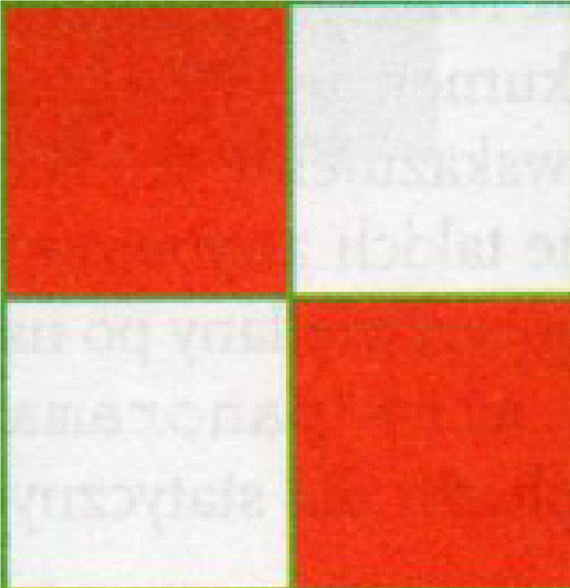

Znak Polskich Sił Powietrznych, malowany na statkach powietrznych
Znak ma formę kwadratowej szachownicy o czterech polach w kolorach
czerwonym i białym. Poniżej przedstawiono wzór szachownicy lotniczej
stosowanej w lotnictwie polskim w latach 1918-1921
